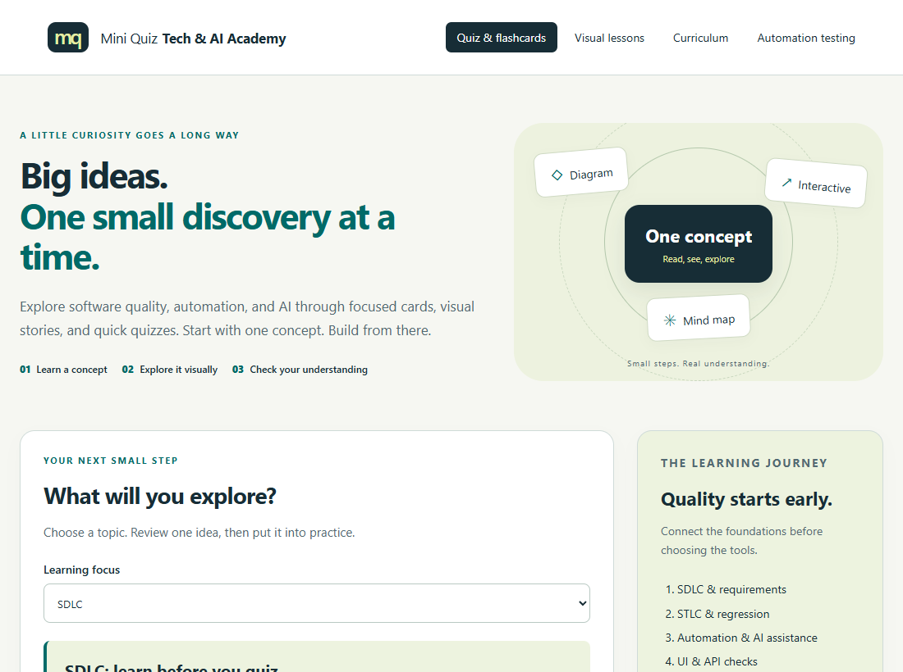
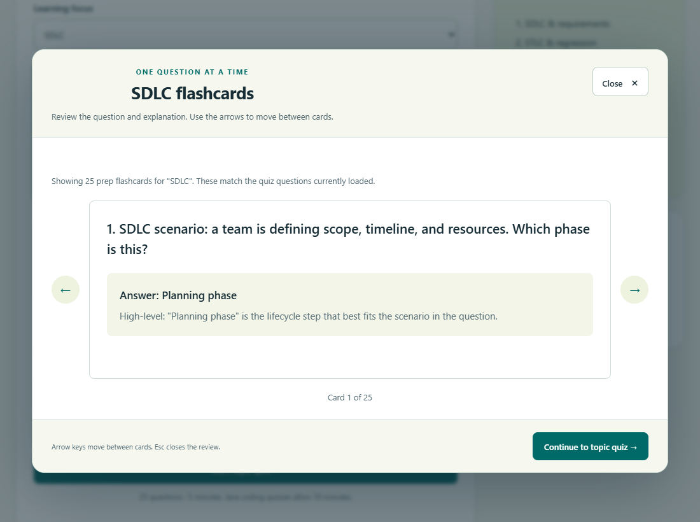
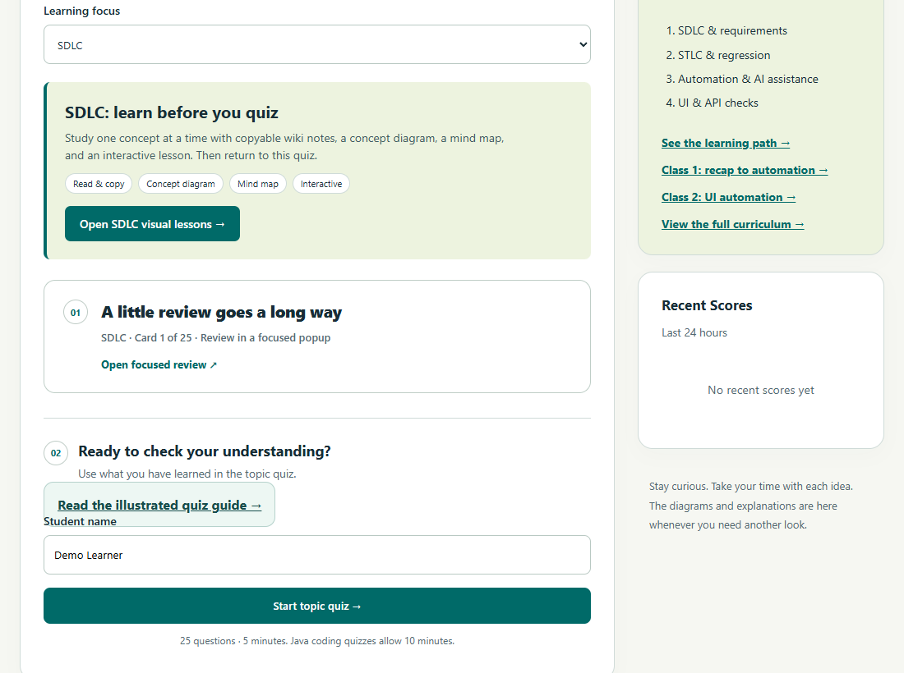
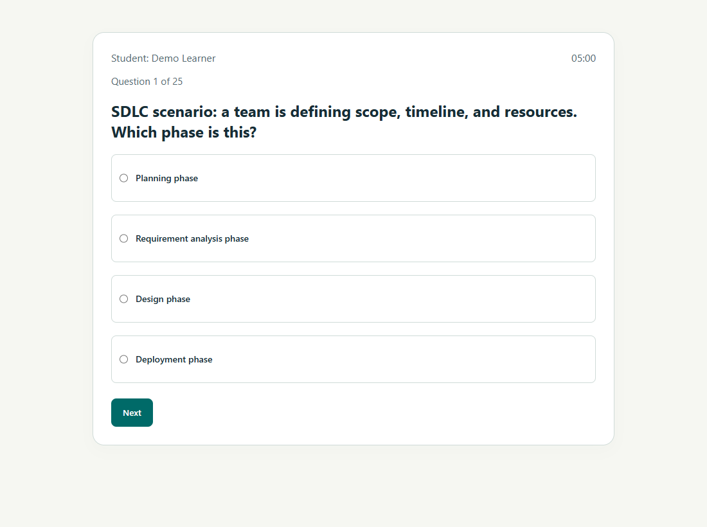

PREPARE · REVIEW · TAKE YOUR QUIZ
Your first quiz, step by step
Choose a topic. Review first. Start when you are ready. These screenshots use SDLC as an example; you can select any topic.
STEP 1
Choose your topic

STEP 2
Read, then review the matching cards
For SDLC, connect each lifecycle stage to its purpose and QA responsibilities. For STLC, review test planning, cases, execution and defects. For ServiceNow, follow the workflow and configuration rules stated in the material. If you cannot explain an answer, revisit the material or ask your instructor.

STEP 3
Enter your name and start

STEP 4
Select one answer, then click Next
SDLC, STLC and ServiceNow have 25 questions and a five-minute timer. Java coding quizzes allow ten minutes. When time runs out, the attempt ends automatically. Unanswered questions do not earn points.

STEP 5
Read your result
When the quiz ends, read the topic and score in your result. Recent Scores shows saved results from the last 24 hours. If saving fails, follow the on-screen message and tell your instructor; do not assume it was saved.
Return to the matching review cards and material for concepts you found difficult.